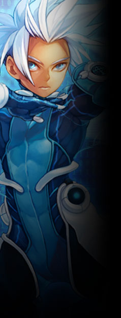

▼治安維持部隊【 グレイプニル 】
異能者のみで構成された上層の特殊部隊。現場において個人として発揮できる権限は最高クラス。
ユグドラシル内であるからこそ局地戦闘にとどまっているが、
決まった分隊などの構成はなく、有事の際には臨時でチーム編成され任務に当たる。
上層民には尊敬の対象である反面、 公式サイト原文
能力者のみで構成された上層のエリート部隊。
ソール隊長を筆頭とするグングニルの力の象徴。
個人の能力が高いため決まった分隊などの構成はなく、
上層民には尊敬の対象である反面、 セントラルタワー下階に拠点を置く。 |
|
 |
ソール
|
||||||||||||||
|
【 番犬 】の異名をとる、治安維持部隊グレイプニル総隊長。
出生については不詳。
無口で必要最低限の言葉しか発しない。必要最低限も発していないかもしれない。
戦闘能力という一点においては島内で彼に並ぶ者はいないが、
「……。（こくり）」 公式サイト原文
ソール
治安維持部隊グレイプニルの隊長。通称【 ユグドラシルの番犬 】。
その力は何人も寄せ付けない。
無口で必要最低限の言葉しか発しない。
「・・・（こくり）。」 性能：基礎５ｐステータス＋ボス特性１０ｐ |
|||||||||||||||